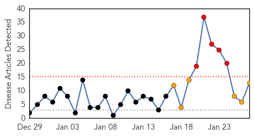

Swine Flu
30-Day Web Trend
5 alerts, 3 warnings

30-Day Twitter Trend
0 alerts, 0 warnings

Article Locations
Article Confidences
Top Articles:
- 1.000
- At least 80 cases of swine flu reported so far in Rajasthan
- 0.999
- Woman dies of swine flu in Indore
- 0.999
- Woman dies of swine flu in Indore
- 0.999
- Spike in swine flu cases, 11 die in Jan alone
- 0.993
- 12-year-old dies of swine flu, NIV officials advise vaccination as preventive measure
- 0.992
- 2 H1N1 Cases Confirmed in Tiruchy City
- 0.982
- NRI from Malaysia admitted to Trichy hospital for swine flu
- 0.978
- 24 confirmed H1N1 cases in Karnataka
- 0.964
- Swine flu death toll reaches 22 in Gujarat; 170 cases reported
- 0.905
- Swine flu patient gives wrong address, still untraceable
- 0.834
- Chennai schools receive notice on H1N1
- 0.828
- Swine flu prevention: homeo pills effective, say officials
- 0.768
- 12-year-old Satara girl succumbs to H1N1
Top Tweets:
-
No tweets found for Jan 27, 2015
MERS
30-Day Web Trend
0 alerts, 0 warnings

30-Day Twitter Trend
0 alerts, 0 warnings

Article Locations

Article Confidences

Top Articles:
-
No articles found for Jan 27, 2015
Top Tweets:
-
No tweets found for Jan 27, 2015